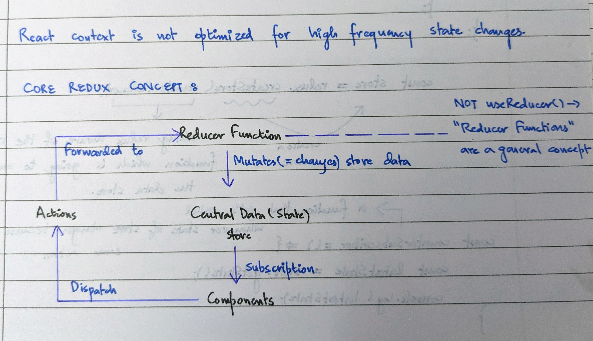

Working on small projects using hooks like useState, useReducer and context API for state management on client side seems to work okay but as size of our projects grow these hooks feels quite obselete and working with them becomes quite tedious. And to tackle this problem is where tools like Redux come into picture.
The big picture of the way redux manages state is quite similar to how context api manages state but redux does the same thing at application level and keeping all things in one place.(This might be a bad analogy but this helped me to grasp the working of redux). So the main idea behind redux is that their is a single place where we maintain whole state of our application, all the data required by various components is going to be managed at one location inside the redux store. Now next question is how to modify the state of our store. Well this is where concept of a reducer function comes into play which provides actions which are used inside components to dispatch these actions which in turn modify the redux store. Now keep in mind a component must be subscribed to the redux store to dispatch these actions and also this subscription makes sure whenever an action is dispatched from a component and state of our store updates to re-render the subscribed component with latest state of our store.
Below mentioned is what you can call a mental map to the concept of redux in your head.
The intent of this blog was not to cover all the technical details of how redux works but just to give a general overview also their are a lot of free amazing tutorials to learn redux so go learn from them and make projects😊.
